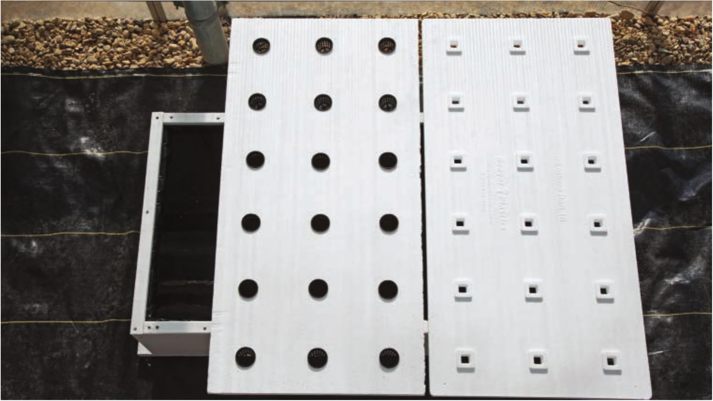

10 The furring strips are fastened along the rim of the reservoir to hide the ends of the plastic liner and to hold the liner securely in place. The furring strips are not completely necessary for the functionality of the reservoir but they add a lot aesthetically. Fasten the furring strips into place with 1 W screws. Assemble the Raft Building a DIY raft is very easy. There are prefabricated rafts available, but they can be expensive. Many of the prefabricated rafts have holes created for specific seedling plug sizes and eliminate the need for net pots. It is possible to create a DIY raft with holes specific to your plug size, making net pots unnecessary, but for this floating raft garden I'm using net pots because they make the process far easier. The prefabricated rafts have a few other design features, like raised plug holders, that make them really nice to use, but for most applications a DIY raft is more than sufficient. 11 Cut a 2 x 4' section from the 1" x 4 x 8' foam board using a razor blade knife. Brush away any loose foam pieces from the cut edge. 12 Place the 2x4' section of foam board on sawhorses and fasten into place with clamps. 13 Most leafy greens are grown with 6" spacing in hydroponic systems. A 2 x 4' raft with 6" spacing holds 18 plants (3 rows of 6). Some greens, such as romaine and basil, grow upright and can be grown at a density of 36 plants per 2x4' raft. Some growers go even higher density (72 plants or more per 2x4' raft) to grow crops like baby kale, baby lettuce, spring mixes, and some herbs. Measure and mark the DIY raft on the left and a prefabricated hydroponic raft on the right HYDROPONIC GROWING SYSTEMS 55
